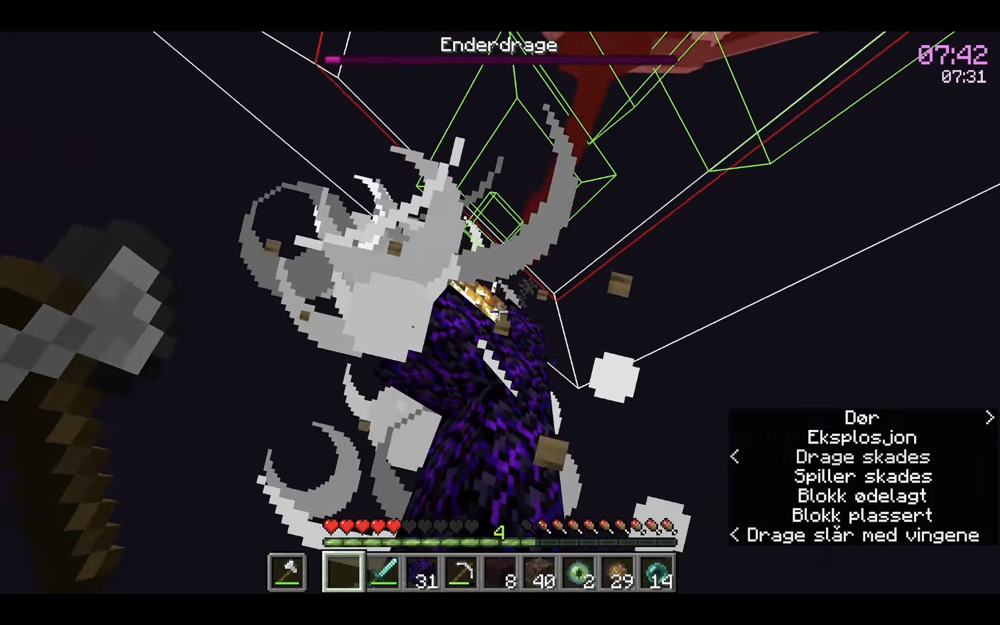
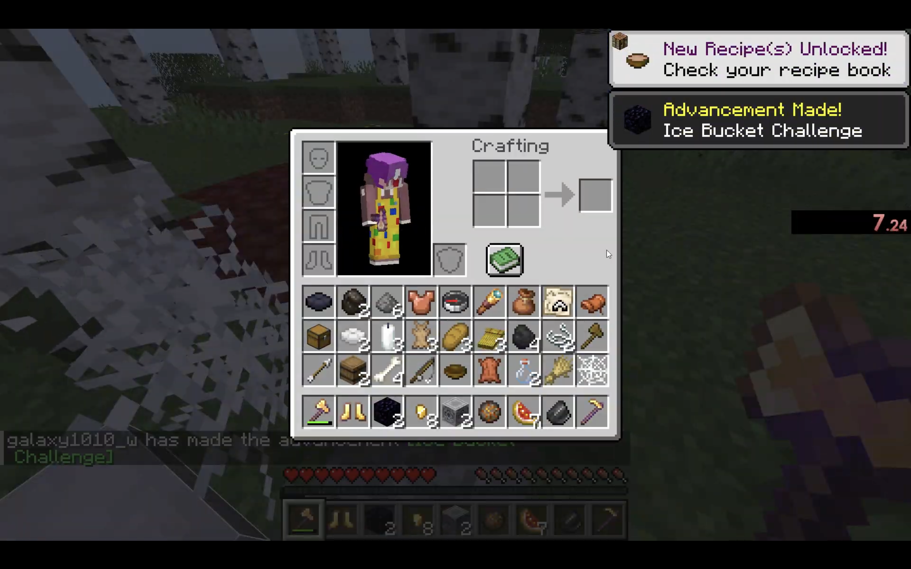

스피드런에 대해
마인크래프트 스피드런은 정해진 룰대로 게임을 최대한 빠르게 클리어하는 것을 목표로 하는 플레이 방식입니다.
이 페이지에서는 스피드런을 처음 접하는 사람도 기본적인 진행 방법과 필요한 정보를 쉽게 확인할 수 있습니다.

무작위로 생성된 시드에서 엔딩 크레딧을 빠르게 띄우는 RSG Any% (dwoh)

정해둔 시드에서 보관함 칸을 빠르게 채우는 SSG Full Inventory (galaxy1010_w)
스피드런의 흐름
스피드런 기본 정보
스피드런은 다양한 종목들이 있으며, 저마다 규칙이 조금씩 다릅니다. 가장 인기 있는 종목은 Any%로, 엔더 드래곤을 잡은 후 나타나는 엔딩 크레딧을 빠르게 보는 것이 목표입니다.
그 외에도 인벤토리 다 채우기, 모든 색상 양털 모으기 등 다양한 분야가 있습니다.
Any% Glitchless 진행 과정
오버월드
도구와 네더 차원에 입장하기 위한 포탈 재료를 모읍니다.
바스티온
바스티온에서 피글린과 거래해 필요한 아이템을 얻습니다.
포트리스
블레이즈를 잡아 엔더의 눈 제작에 필요한 재료를 얻습니다.
블라인드
오버월드로 돌아와 엔더 유적의 위치를 찾습니다.
엔드 포탈
엔더의 눈으로 포탈을 활성화하고 엔드로 이동합니다.
엔드
엔더 드래곤을 처치하고 엔딩 크레딧을 띄웁니다.
초보자 팁
무작정 빠르게 플레이하기보다는 필요한 기술과 정보를 익힌 후 바스티온 라우트 등 어려운 부분을 나누어 연습하는 것이 좋습니다.
스피드런 연습 시작하기
연습할 종목과 마인크래프트 버전, 현재 숙련도를 선택하고 자신에게 맞는 연습 방향을 확인해 보세요.
1. 연습 정보 선택
스피드런 종목을 선택해 주세요.
2. 선택 내용 확인
선택한 내용이 맞는지 확인해 주세요.
연습 준비 완료
의견 남기기
페이지에 대한 의견을 남겨주세요.